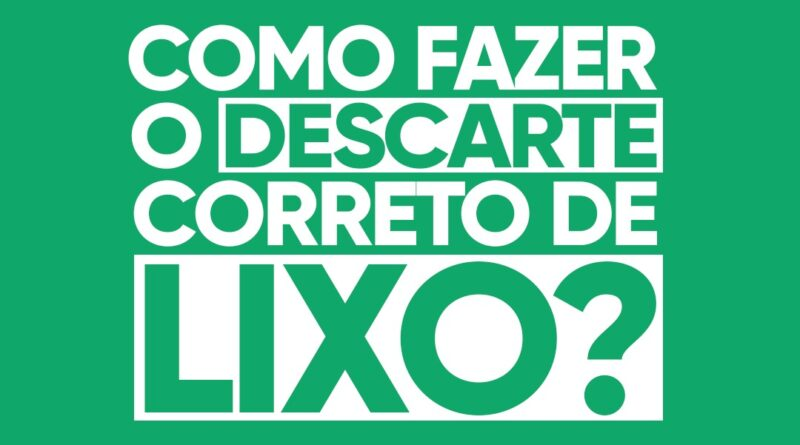
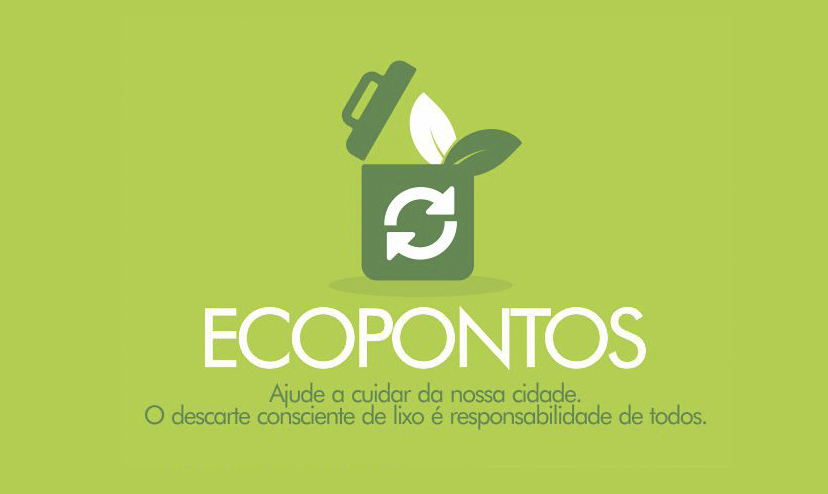

Descarte de resíduos
Santa Bárbara d´Oeste é referência na região em gerenciamento de resíduos. A Prefeitura, por meio da Secretaria de Meio Ambiente, mantém um programa que inclui Ecopontos e Coleta Seletiva. São 700 caçambas em média por mês de entulhos, madeiras, restos de poda e roçagem, e 450 móveis inservíveis (sofás, colchões, armários, entre outros) e materiais recicláveis recolhidos dos Ecopontos, além de uma média de 40 toneladas de lixo reciclável recolhidos por mês pela Coleta Seletiva no município.
Os Ecopontos são PEVs (Ponto de Entrega Voluntária) e são destinados à população que precisa descartar resíduos gerados em suas atividades ou residências. Santa Bárbara d´Oeste dispõe atualmente de Ecopontos nos bairros Jardim Gerivá, Nova Conquista, Planalto do Sol e Parque Olaria.
Os Ecopontos foram implantados em Santa Bárbara d´Oeste entre 2007 e 2008. Em 2013, quando a Administração atual assumiu a Prefeitura, a situação dos Ecopontos era crítica. A visão dos Ecopontos poderia ser comparada a lixões a céu aberto. “Eles tinham perdido seu papel de receber, triar e destinar resíduos. Eles recebiam e acumulavam. Os materiais volumosos eram compactados com uma máquina para diminuir volume e depositam mais”, comentou o secretário de Meio Ambiente, Cleber Canteiro.
Ecopontos
O que são Ecopontos? São locais de entrega voluntária de pequenos volumes de entulho (até 1 m³), grandes objetos (móveis, sofás, etc.), poda de árvore e resíduos recicláveis. Nessas estruturas o munícipe pode dispor o resíduo gratuitamente em caçambas distintas para cada tipo de material.
Objetivo? é o de dar fim ao despejo desses tipos de itens que são descartados de modo incorreto em vias públicas, rios e terrenos baldios, que ocasiona desde problemas de saúde a enchentes, além aumentar os gastos com a limpeza pública. Materiais recicláveis (papel, papelão, vidro e alumínio) também podem ser levados para estes espaços e de lá serão reaproveitados. Para recebê-los, os Ecopontos contam com PEVs (Ponto de Entrega Voluntária de Recicláveis), caixas verdes semelhantes a contêineres instaladas em locais públicos para estimular a entrega voluntária desse tipo de material.
Como faço para saber qual o Ecoponto mais próximo de minha residência?
!!!Atenção!!!Ao digitar sua localização aparecerá no mapa uma marcação do seu local e visualmente será possível decidir qual o ponto de descarte mais próximo.